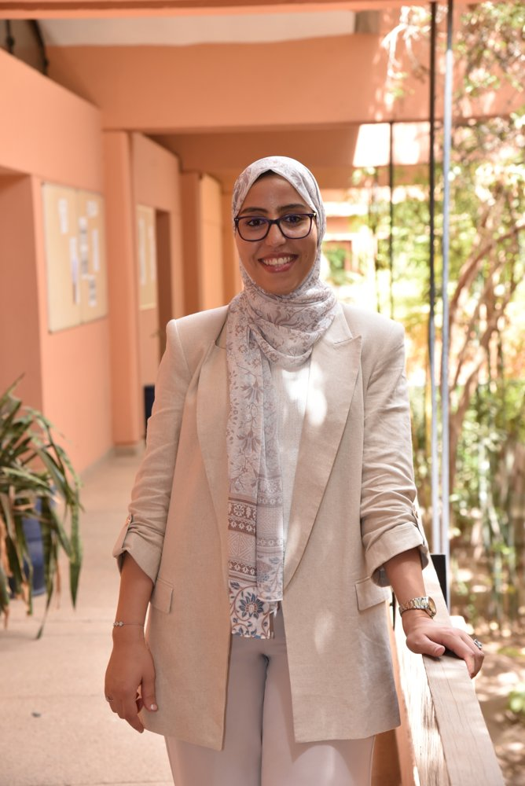

Professeure Associée à l'ENCG, Université Mohammed Premier (Oujda) — Statistique & Probabilités Associate Professor at ENCG, Mohammed First University (Oujda) — Statistics & Probability
Titulaire d'un doctorat en Mathématiques Appliquées, spécialité Statistique et Probabilités, obtenu à la Faculté des Sciences Semlalia de l'Université Cadi Ayyad (Marrakech), sous la direction du Pr. Mkhadri Abdellah. Ma thèse, intitulée « Sliced Inverse Regression in High Dimension », porte sur les méthodes de réduction de dimension pour la régression en grande dimension.
Holder of a PhD in Applied Mathematics, specializing in Statistics and Probability, from the Faculty of Sciences Semlalia at Cadi Ayyad University (Marrakech), under the supervision of Pr. Mkhadri Abdellah. My thesis, titled "Sliced Inverse Regression in High Dimension," focuses on dimension reduction techniques for high-dimensional regression.
Mes travaux visent à développer de nouvelles alternatives pour les jeux de données de haute dimension ou fortement corrélées, et à comparer ces approches aux méthodes existantes par simulation et par applications sur données réelles, principalement à l'aide du langage R.
My research focuses on developing new alternatives for challenging scenarios, such as high-dimensional or highly correlated datasets, and on comparing these methods with existing approaches through simulations and real-data applications using the R language.
J'ai effectué un séjour de recherche doctoral à l'Université de Sherbrooke (Canada) en août 2024. Depuis 2026, j'occupe le poste de Professeure Associée à l'École Nationale de Commerce et de Gestion (ENCG) d'Oujda, Université Mohammed Premier. Parallèlement, j'assure des enseignements et travaux dirigés dans plusieurs établissements marocains depuis 2017.
I completed a PhD research internship at the University of Sherbrooke (Canada) in August 2024. Since 2026, I have held the position of Associate Professor at the National School of Business and Management (ENCG) of Oujda, Mohammed First University. Alongside this, I have taught and supervised tutorials at several Moroccan institutions since 2017.
Laboratoire Ibn-Banna de Mathématiques Appliquées, FSSM, Université Cadi Ayyad, Marrakech Ibn-Banna Laboratory of Applied Mathematics, FSSM, Cadi Ayyad University, Marrakech
Thèse : « Sliced Inverse Regression in High Dimension » — Directeur : Pr. Mkhadri Abdellah Thesis: "Sliced Inverse Regression in High Dimension" — Supervisor: Pr. Mkhadri Abdellah
Faculté des Sciences Semlalia, Université Cadi Ayyad, Marrakech Faculty of Sciences Semlalia, Cadi Ayyad University, Marrakech
Faculté des Sciences Semlalia, Université Cadi Ayyad, Marrakech Faculty of Sciences Semlalia, Cadi Ayyad University, Marrakech
Lycée de Demnate — mention assez bien Demnate High School — satisfactory mention
École Nationale de Commerce et de Gestion (ENCG), Université Mohammed Premier, Oujda National School of Business and Management (ENCG), Mohammed First University, Oujda
Module « Analyse de Données et Échantillonnage » (cours, TD, TP) Module: Data Analysis and Sampling (lectures, tutorials, and labs)
Faculté des Sciences Semlalia, Université Cadi Ayyad, Marrakech Faculty of Sciences Semlalia, Cadi Ayyad University, Marrakech
TP de langage C (SMA-S3) — TD d'algèbre (SMP-S1) Language C labs (SMA-S3) — Algebra tutorials (SMP-S1)
Université de Sherbrooke, Canada University of Sherbrooke, Canada
Académie Régionale de l'Éducation et de la Formation, Marrakech-Safi Regional Academy of Education and Training, Marrakech-Safi
Faculté des Sciences Semlalia, Université Cadi Ayyad, Marrakech Faculty of Sciences Semlalia, Cadi Ayyad University, Marrakech
Implémentation R de la méthode « Natural Canonical Thresholding » pour Sliced Inverse Regression en haute dimension.
R implementation of the "Natural Canonical Thresholding" method for Sliced Inverse Regression in high dimension.
github.com/nasrir-ai/nctsirPackage R pour la régression inverse par tranches sur données censurées, basé sur l'approche « Weighted Leverage Score ».
R package for Censored Sliced Inverse Regression using the Weighted Leverage Score approach.
github.com/nasrir-ai/CSIRWLSPackage R compagnon de l'article sur l'approche « Weighted Leverage Score » comparée au Lasso pour la régression inverse par tranches (screening par SVD, sélection de variables, métriques de simulation).
Companion R package for the paper on the Weighted Leverage Score approach versus Lasso Sliced Inverse Regression (SVD-based screening, variable-selection metrics, simulation tools).
github.com/nasrir-ai/SIR-WLS